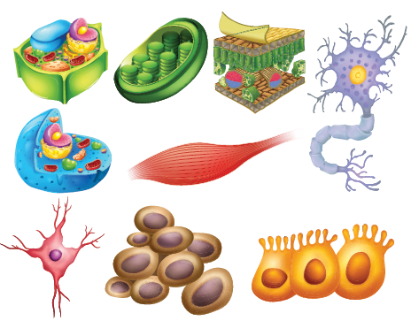
Sona had a dinner, some hour later, she experienced a stomach pain and went to a clinic. After examination, the Doctor told Sona that she had eaten food contaminated with a type of bacteria which might have caused food poisoning. Bacteria are micro-organisms that can be seen only under microscope and not seen through naked eyes. Salmonella species is a bacteria that can cause food borne infection.
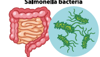
Our earth is a beautiful place where in different types of organisms happily coexist. From minute mosses to huge conifers, invisible bacteria to huge blue whale, all have a basic unit called Cell. Let us study about the cell.
ACTIVITY 1 begins.
Do you remember the lesson studied in previous class, how will you find whether on object is living or non living? Write it down. An object is living or non living?
1. Form a team and work together to write down some of the functions of living things, which you can remember.
2. Do you think that an individual cell is living? Explain your answer
3. Write about various organelles of a cell which you know. Activity ends.
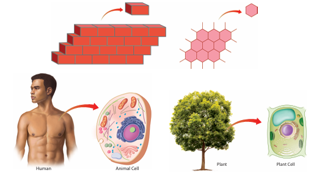
The building wall is made up of numerous bricks. In the similar manner, a bee hive is composed of numerous hexagonal units. Some of the organisms are represented by a single cell. Therefore, they show a simple organization. The basic functional unit of an organism is called, a cell. Structure of a cell represent the arrangement of parts or organells in a cell. Function is the activity of each part or organell in a cell. Cells are the basic building blocks of an organism. You learnt that atoms are the basic building blocks of matter in chapter three. Likewise, human body is made up of animal cells and plant is made up of plant cells.
Unicellular organisms
Some simple organisms, are made up of only one cell. They are called unicellular organisms, which can be seen with the help of a microscope. There are many single celled microscopic organisms.
Have a look at the image. Chlamydomonas and an Amoeba, a single cell organisms which carryout entire functions. The body of all organisms are made up of tiny building blocks called, cells. Bacteria are also one celled unicellular organisms.
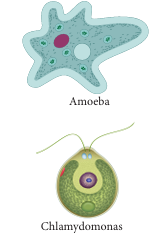
Multicellular Organism
The cells are organized into tissues, organs and organ systems in a multicellular organism. Macroscopic organisms are visible and consists of many cells. The body of macroscopic organisms involves various functions. You can see cells of onion and human through a microscope. Onion and man are examples for multicellular organism.
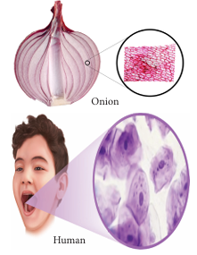
Cell to organism
Many cells function together to form tissues, different tissues combined together to form an organ and different organs to form an organ system, which leads to form an organism.
Organisms.
Many types of organ systems function together in a body, e.g. respiratory system, digestive system, excretory system circulatory system etc.
Organ System
Many organs together form an organ system, which is concerned with a specific function. For example, Respiratory system, which has organs like nostrils, nasal chamber, Vind pipe and lungs that helps in the process of respiration. In a plant, the root system consists of primary root, secondary root and tertiary root, which does the function of conduction of water, mineral and also fixation.
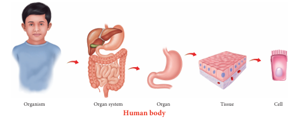
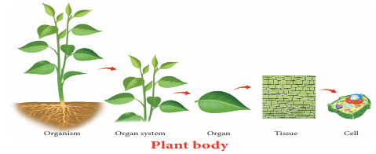
Organ
A collection of different tissues worked together to perform a specific function or functions is called an organ. Human body has different organs like stomach, eye, heart, lungs etc., are made up of different type of tissues. Plant has organs such as leaves, stems, and roots.
Tissue
Tissue is a group of cells, organized for a specific function. Tissues have following features like same shaped cells or different shaped cells to perform a common function. Human and other animals are made up of nervous, epithelial, connective and muscle tissues. Plants have transport, protective and ground tissues.
Cell
The cell is a basic structural and functional unit of life. Cell is the building unit of living organisms. You can see in a hand, how many types of cells are there to work together to perform its functions. So, cell is known as the basic unit of life.
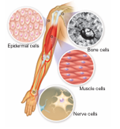
ACTIVITY 2
Find out major organs that are part of the circulatory system of a human body and list out their functions.
Why do plant cells differ from animal cells? They differ from each other because they have to perform different functions. Now you know that there are many main similarities between plant and animal cells. Let us see how they differ from one another as given in the picture (Activity 3).
Our body is made up of many different kinds of cells. Each type of cell is specialized to perform a specific function. Depending on the function, cell has specific shape, size and may have some components which other type of cells do not have. Have a look at the differences between nerve cells and red blood cells in the images. Even though there are many different types of cells, there are some components common to all type of cells. Let us take a look at this in the next section.
What’s inside a cell?
Inside a cell, there are many tiny structures called cell organelles. These organelles are responsible for providing needs of the cell. They work to bring in food supplies, get rid of waste, protection and repair of the cell, and help it to grow and reproduce. Each one has a specific function to do for the cell. And, if any one organelle stops its function, then the cell is programmed to die.
Cell Structure
As we have mentioned before, all cells have some common structure. These are 1. Cell membrane 2. Cytoplasm, and 3. Nucleus (In most eukaryotic cells). The structure of a typical plant and animal cell shows following peculiarities,
Cell membrane
The boundary of an animal cell is the plasma membrane, which is also called as cell membrane.
Cell wall “Supporter and Protector”
All animal and plant cells are enclosed or surrounded by a cell membrane as you learned before. However, as you might have noticed previously that, animal cells often have an irregular shape, whereas plant cells have a much more regular and rigid shape.
Plant cells have an additional layer on the outer side of the cell membrane. This is called as the cell wall, that provides a frame work for support and stability.
The cell wall is formed from various compounds, the main one being cellulose. Cellulose helps to maintain the shape of the plant cell. This allows the plant to remain rigid and upright even if it grows to great heights. Each cell is interconnected with its neighbouring cells through openings called Plasmodesmata.
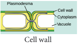
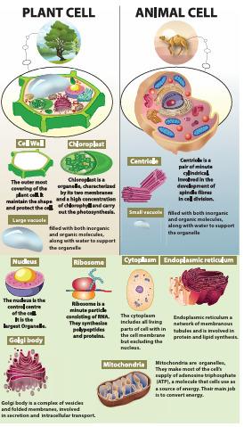
Description for the above picture begins,
Under Plant cell picture of a tree is given, below which cross section of plant cell is given, in which nucleus, chloroplast Golgi body, mitochondria, ribosomes, cell wall and large vacuoles are seen. Below which the cell organelles found only in plant cell are given below. They are,
Cell wall, The outer most covering of the plant cell. It maintains the shape and protect the cell.
Chloroplast, chloroplast is a organelle, characterised by its two membranes and a high concentration of chlorophyll and carry out the photosynthesis.
Large vacuole, filled with both inorganic and organic molecules, along with water to support the organelle.
Under animal cell picture of a camel is given, below which cross section of animal cell in which nucleus, mitochondria, cytoplasm, endoplasmic reticulum, centriole small vacuole are seen. Below which the organelles present only in animal cell are given below, they are,
Centriole, is a pair of minute cylindrical, involved in the development of spindle fibres cell division.
Small vacuole, filled with both inorganic and organic molecules, along with water to support the organelle.
Below these, the organelles which are found in both plant cell and animal cell are given, they are,
Nucleus, is the control centre of the cell, it is the largest organelle.
Ribosome, is a minute particle consisting of RNA, they synthesize polypeptides and proteins.
Golgi body, is a complex of vesicles and folded membranes, involved in secretin and intracellular transport.
Cytoplasm, includes all living parts of cell with in the cell membrane but excluding the nucleus.
Endoplasmic reticulum a network of membranous tubules and is involved in protein and lipid synthesis.
Mitochondria, are organelles, they make most of the cell’s supply of adenosine triphosphate, that is ATP, a molecule that cells use as a source of energy. Their main job is to convert energy.
Activity 3
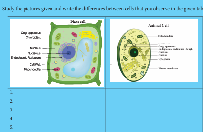
Description for the above picture begins, Study the pictures given and write the differences between cells that you observe in the given table.
Under plant cell, picture of plant cell and following parts are labelled, golgi apparatus, chloroplast, nucleus, nucleolus, endoplasmic reticulum, cell wall and mitochondria.
Under animal cell, picture of animal cell and following parts are labelled, Mitochondria, centrioles, golgi apparatus, rough endoplasmic reticulum, nucleus, nucleolus, cytoplasm, plasma membrane. Description ends.
Structure and functions of specialised cells
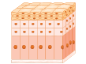
Structure of epithelial cells, they are mostly flat and columnar in shape,
Function of epithelial cells They cover the surface of the body for protection.
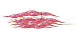
Structure of muscle cells, they are long and spindle shaped,
function of muscle cells, they can control and relax allowing the cell for movement.
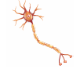
Structure of nerve cell, the body of nerve cell is branched with an elongated nerve fiber.
Function of nerve cells are specialised to carry and conduct messages that coordinate the functions of the body.
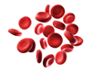
Structure of red blood cells are round, biconcave and disc shaped.
Functions of red blood cells, they carry oxygen and collect carbon dioxide from various part of the body.
Do you know begins,
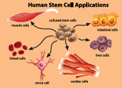
Stem Cells, Stem cells are quite amazing as they can divide and multiply while at the same time with their ability to develop into any other type of cell. Embryonic stem cells are very special as they can become absolutely any type of cell in the body, for example, blood cell, nerve cell, muscle cell or gland cell. So they are utilized by the Scientist and Medicos, to cure and prevent some diseases like Spinal cord injury. Do you know ends.
Cytoplasm, I am the “Area of Movement”. When you look at the temporary mounts of an onion peel, you can see a large region of each cell an enclosed by the cell membrane. This region takes up very little stain. It is called the cytoplasm.
The cytoplasm includes all living parts of the cell with in the cell membrane, excluding the nucleus. The cytoplasm is made up of the cytosol and cell organelles. The cytosol is a watery, jelly- like medium made up of 70% to 90% water and usually colourless.
Cell organelles and structures present in a cell are endoplasmic reticulum, vacuole, ribosome, golgi body, lysosome, mitochondria, centriole, chloroplast, surrounded by plasma membrane and cell wall.
Protoplasm versus Cytoplasm
In particular, the material inside and outside the nuclear membrane is known as Protoplasm. The fluid inside the nucleus is known as the nuclear fluid or nucleoplasm and outside the nucleus is called as cytoplasm.
Inside the cytoplasm
Mitochondria “Power house of the Cell”.
Do you remember learning about the food as the energy source for the body? Just as wood is burnt to release the stored potential energy to make a fire to heat some water. The food that you ate to be broken down in order to release the energy which can be used by your body to function. Mitochondria are responsible to do this function.
Very active cells have more mitochondria than cells that are less active. Which type of cell, do you think, will have more mitochondria, a muscle cells or a bone cell?
Mitochondrian is an oval or rod shaped double membrane bounded organelle. Aerobic respiratory reactions take place with in the mitochondrion to release energy. So it is known as “the Power House” of the cell. The energy produced within the mitochondrion is used for all the metabolic activities of the cell.
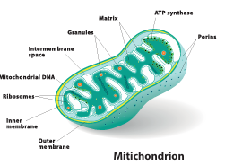
Chloroplast “Food Producers”.
Do you notice the green organelles present in plant cells and absent in animal cells. Chloroplasts are the only cell organelles that can produce food from the sun energy. Only plants with chloroplast are able to do photosynthesis because they contain the very important green pigment, chlorophyll. Chlorophyll can absorb radiant energy from the Sun and convert it to the chemical energy which can be used by the plants and animals. Animal cells lack chloroplasts and are unable to do photosynthesis.
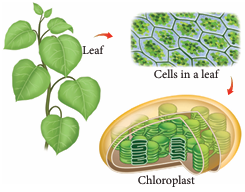
Box message begins,
Observing chloroplast in algae
Collect some algae from pond and separate out thin filaments of them. Place a few filaments on a slide. Observe it under the microscope. Take the help of given figure and draw the picture of chloroplast that you have observed under the microscope. Chloroplast is a type of plastid. which are present only in plant cells. Plastids are mainly of two types, chromoplasts (coloured) and leucoplasts (colourless). Box message ends.
Do you know begins,
Various range of these plastids impart different colours to various parts of plant. Chromoplast impart colour to flower and fruits. As fruits ripen, chloroplasts change to chromoplasts. Starch is converted to sugar. Do you know ends.
Golgi Complex, I need a break
Membrane bounded sacs are stacked on top of the other with associated secretory vesicles are collectively known as Golgi complex. Functions of Golgi complex are the production of secretory substances, packaging and secretion. This is the secret behind the change in the colour and taste of fruits.
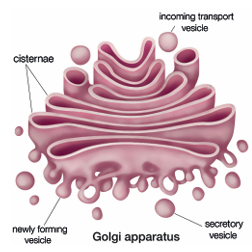
Lysosome “Suicidal Bag”.
Everything I touch, I destroy.
You will find organelles called as lysosomes, which are very small to view using a light microscope. They are the main digestive compartments of the cell. They lyse a cell, hence they are called “suicidal bag”.
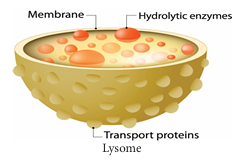
Centrioles
They are generally found close to the nucleus and are made up of tube like structures. Centrioles or centrosomes are present only in animal cells and absent in plant cells. It helps in the separation of chromosomes during cell division.
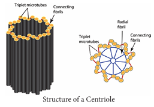
Endoplasmic reticulum, You guys, be quiet, I have so much work to do
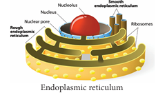
It is an inter membranous network made up of flat or tubular sacs within the cytoplasm. Endoplasmic reticulum is of two types. They are rough endoplasmic reticulum and smooth endoplasmic reticulum.
Rough endoplasmic reticulum are rough due to the ribosomes attached to the membrane, which helps in the synthesis of protein.
Smooth endoplasmic reticulum. It is a network of tubular sacs without ribosomes on the membrane. They play a role in the synthesis of lipids, steroids and also transport them within the cell.
Nucleus, Everyone do what I say. Acting like the “Brain” of the cell
Functions of Nucleus
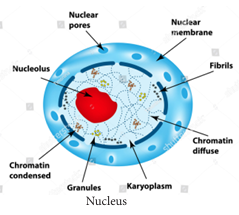
ACTIVITY 3
Summarise what you have learnt
Now you have studied the internal structure of a cell. Let us summarise what we have learnt so far Complete this table by filling the main function of each of the cell structures in the following table.
Cell structure |
Functions |
1, cell membrane |
|
2, cell wall |
|
3, cytoplasm |
|
4, mitochondria |
|
5, vacuole |
|
6, chloroplast |
|
7, endoplasmic reticulum |
|
Do you know begins, Red blood cells
Red blood cells do not contain a nucleus. Without a nucleus, these cells die quickly, about two million red blood cells die every second, Luckily, the body produces new red blood cells every day. Do you know ends.
1. Basis unit of life.
A) Cell
B) Protoplasm
C) Cellulose
D) Nucleus
2. I am the outer most layer of an animal cell. Who am I?
A) Cell wall
B) Nucleus
C) Cell membrane
D) Nuclear membrane
3. Which part of the cell is called the brain of the cell?
A) Lysosome
B) Ribosome
C) Mitochondria
D) Nucleus
4. dash helps in cell division
A) Endoplasmic reticulum
B) Golgi complex
C) Centriole
D) Nucleus
5. Suitable term for the various components of cell is dash.
A) Tissue
B) Nucleus
C) Cell
D) Cell organelle
1. The jelly like substance present in the cell is called dash.
2. I convert the Solar energy into food for the plant. Who am I? dash.
3. Mature Red blood cell do not contain a dash.
4. Unicellular organisms can only be seen under a dash.
5. Cytoplasm plus nucleoplasm is equal to dash.
1. Animal cells have a cell wall.
2. Salmonella is a unicellular bacteria.
3. Cell membrane is fully permeable.
4. Only plant cells have chloroplasts.
5. Human stomach is an organ.
6. Ribosomes are small organelles with a membrane.
1 |
Transporting channel |
Nucleus |
2 |
Suicidal bag |
Endoplasmic reticulum |
3 |
Control room |
Lysosome |
4 |
Power house |
Chloroplast |
5 |
Food producer |
Mitochondria |
1. Bacteria is to microorganism, mango tree is to dash.
2. Adipose is to tissue, eye is to dash.
3. Cell wall is to plant cell, centriole is to dash.
4. Chloroplast is to photosynthesis, mitochondria is to dash.
1. Assertion (A) Tissue is a group of dissimilar cells.
Reason (R) Muscle is made up of Muscle cell.
a. Both Assertion and Reason are true
b. Both Assertion and Reason are false
c. Assertion is true but Reason is false.
d. Assertion is false but Reason is true.
2. Assertion (A) : Majority of cells cannot be seen directly with naked eye because.
Reason (R) : Cells are microscopic.
a. Both Assertion and Reason are true
b. Both Assertion and Reason are false
c. Assertion is true but Reason is false.
d. Assertion is false but Reason is true.
1. What are the functions of cell wall in plant cell?
2. Which organelle uses energy from sunlight to make starch?
3. What are the main things in a nucleus?
4. What does cell membrane do?
5. Why lysosomes are known as scavengers of the cell?
6. Teacher said “A virus is not an organism” Do you agree with this statement or not? Explain Why?
1. Why the cell is very important for us?
2. Distinguish between the following pairs Smooth Endoplasmic reticulum and Rough Endoplasmic reticulum, Cell wall and cell membrane, Chloroplast and mitochondria
3. Write correct sequence from cell to organism?
4. Write a short note on nucleus.
5. Classify the following terms into cells, tissues, organs and write in the tabular column given below. Neuron, Lungs. Xylem, brain, adipose, Leaf, R B C, W B C, hand, muscle, heart, ovum, squamous, phloem, cartilage.
Cells |
Tissues |
Organs |
|
|
|
|
|
|
|
|
|
|
|
|
6. On the lines given below, write about what you have learned from the activities done in this lesson. Let me tell you about some of the important things I have learned about cells. First, I will start with lines.
1. Write about any three organelles in detail.
2. In a situation, how to explain, while your friend ask what is this, never seen before?
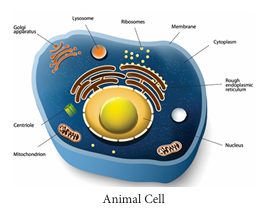
3. Compare the plant cell and the animal cell and complete the illustration given below.
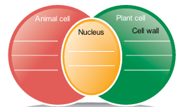
Virus is called Acellular. Why?